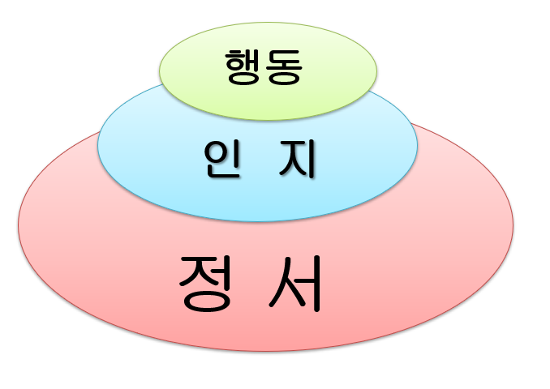

아이가 막무가내로 울고 떼쓰기를 하면서 똥고집을 부려요.
아이는 자신이 원하는 대로 되지 않고 자기 뜻대로 될 때까지 온몸으로 투쟁을 하듯 부모를 자극시켜요. 이 과정에서 저는 아이가 '너무 울어서', '너무 어려서', '안타까워서' 등 안쓰러워해요. 때로는 아이에게 화를 내고 윽박지르면서 부정적인 감정을 사용한 후 매번 후회를 하게 되는데 어떻게 해야 할까요?

아이는 성장과정에서 나타나는 정상적인 현상입니다.
아이는 자신의 요구가 받아들여졌다는 점을 알게 된 것입니다. 또한 애정에 굶주린 경우는 부모의 주의를 끌기 위해 잘 울곤 합니다. 부모는 자녀의 탄생으로 아빠역할, 엄마역할을 하면서 함께 성장해 가는 과정입니다. 부모도 사람이기에 이성보다 감정을 앞세울 때가 종종 있지요. 항상 좋게, 항상 아름답게, 항상 우아하게 살아갈 수는 없습니다. 하지만 사랑스러운 내 아이에게 화를 내고, 소리치고 나면 아이가 움츠리고 주눅들어 있는 모습을 보면 미안하고, 안쓰러워 하면서 자책을 하는 경우가 종종 있습니다.
아이는 자기 주장을 할 수 있다는 의미입니다.
자주 울고 떼쓰는 아이로 크면 제멋대로 행동하는 성격이 되기 쉽습니다. 아이는 발달 과정에서 자의식을 본능적으로 나타내는 자기주장입니다. 이 시기는 아이가 떼쓰지 않고 순응하도록 적절하게 대처할 수 있어야 합니다. 그동안 부모의 잘못된 양육태도를 바꾸고 올바른 훈육으로 융통성을 발휘해야 할 것입니다.
부모의 잘못된 양육태도 문제를 파악하고 올바르게 해결하기 위한 방법은 다음과 같습니다.
1) 아이가 울고 떼쓰면 해결되지 않고 소용없다는 것을 가르쳐 주세요.
아이가 자기 주장을 천천히 말하도록 유도해야 합니다. 어떤 날은 들어주고, 어떤 날은 들어주지 않는 혼란을 주지 않도록 주의하면서 항상 일관성 있게 합니다. “괜찮아", "기다릴께" 하고 지켜봅니다. 아이가 울지 않고 말로 나타냈을 때 포근하게 안아 주며 칭찬해 주면 언어발달 및 인지발달로 사회적 관계에 대한 자신감이 형성됩니다.
2) 아이의 울고 떼쓰는 행동과 요구를 구분해 주세요.
아이가 부당한 요구를 고집하며 울 때는 조금 심하다는 생각이 들더라도 무시해야 합니다. 대형마트에서 장난감을 사달라고 하는 경우, 과자를 사달라고 우는 경우 등 다양한 상황에서 당장 해결하겠다는 이유로 아이에게 나쁜 버릇을 만들지 말아주세요. 아이가 요구하는 것을 사러 온 것이 아니라는 점을 명확히 인식이 되면 아이는 여기서 운다고 되는 것이 아니라 사전에 정해진 것을 먼저해야 한다는 이해하게 됩니다. 이런 행동을 반복적인 훈련과 책임의식이 필요할 것입니다.
3) 아이가 울면서 말하는 것은 부끄러운 행동임을 알려 주세요.
아이들은 자신의 욕구 및 상황을 말을 표현하기가 미숙하므로 울음이나 난폭한 행동으로 나타냅니다. 이때 부모는 "하고 싶은 말이 있으면 언제든지 말로 하는거야. 사람은 무얼 하고 싶은지 말로 표현해야 하는 거야.” 라고 부드럽게 타일러 주면서 "언제든지 기다릴께." 하면서 관심을 주고 민감하게 반응해 주세요. 이러한 훈육이 반복되면 점차 아이도 운다고 모든 것이 받아 들여지지 않는다는 것을 알게 된답니다.
4) 아이에게는 엄격함과 무관심도 필요해요.
아이가 울고불고 난리를 펼치면 부모는 심리적으로 흔들리면서 불안 감정을 나타내지요.부모는 아이들마다 성격 및 기질이 다르고, 육아 환경이 다르기 때문에 그에 맞는 육아 방식으로 단호하게 해야 합니다. 아이의 욕구나 감정이 풀릴때까지 침착하게 기다려 주면 자신의 모든 상황을 해결하기 위한 수단이 되지 않는다는 것을 파악하는 능력이 발달합니다.
5) 아이의 마음을 진심으로 이해해 주세요.
아이에게 지금 무엇이 부족하고, 어떤 것이 불만인지 파악해야 합니다. 옷이 꽉끼어서 불편하지, 장난감의 문제에서 화가나서 그런지, 사회적 상황에서 모면하려고 그런지 등 정말 힘든 감정을 호소하고 싶어서 최후의 수단으로 나타낼 수도 있습니다. 부모는 아이가 올바르게 대처할 수 있도록 진심어린 시선으로 살펴주고 공감하여 자존감을 향상시켜줘 합니다.
6) 아이는 부모에게 보호받고 싶은 본능이지요.
아이는 부모에게 절대적으로 의존해야 하는 시기입니다. 혹시 부모에게 버림받을까 두려움과 불안 감정이 내재화되어 있습니다. 부모는 자녀를 위하여 일관된 훈육 태도를 보여주세요. 아이가 부모에게 온갖 감정을 쏟아부으면서 자신의 욕구를 나타내지만 부모는 아이가 원하는 것을 무조건 들어주지 말고 상황에 따른 구분을 잘해야 자기조절력을 형성됩다. 그리고 항상 따뜻하고 포근한 위로를 해주면서 행복한 마음으로 상호작용해야 자주성이 이루어집니다.
2021.09.29 - [분류 전체보기] - 울고불고 분노 감정조절을 못하는 행동-자기통제력 부족
울고불고 분노 감정조절을 못하는 행동-자기통제력 부족
1. 화내는 문제 행동 의의 및 특성 3세의 경우 제1반항기로 독립심과 자아 의식이 발달하면서 스스로 자신의 감정을 통제하기 어렵다. 아이는 자신의 요구에 대한 언어 표현력이 부족하여 사소
think-sis.tistory.com